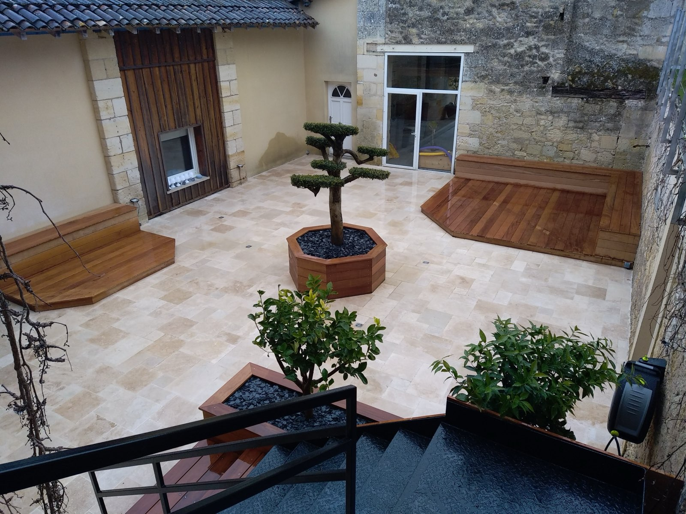

LE CARNET D’UN ARTISAN · GIRONDE
Le savoir-faire
se partage.
Des idées pour votre habitat, des conseils de terrain et la passion du travail bien fait.
Yannick Florent, artisan depuis 1996

LE BLOG PREND FORME
Les premiers articles
arrivent bientôt.
Je prépare cet espace pour partager avec vous mon métier, mes conseils et les coulisses de mes réalisations. Encore un peu de patience, les premières pages s’écrivent !
- Conseils pratiques
- Inspirations bois
- Vie de chantier